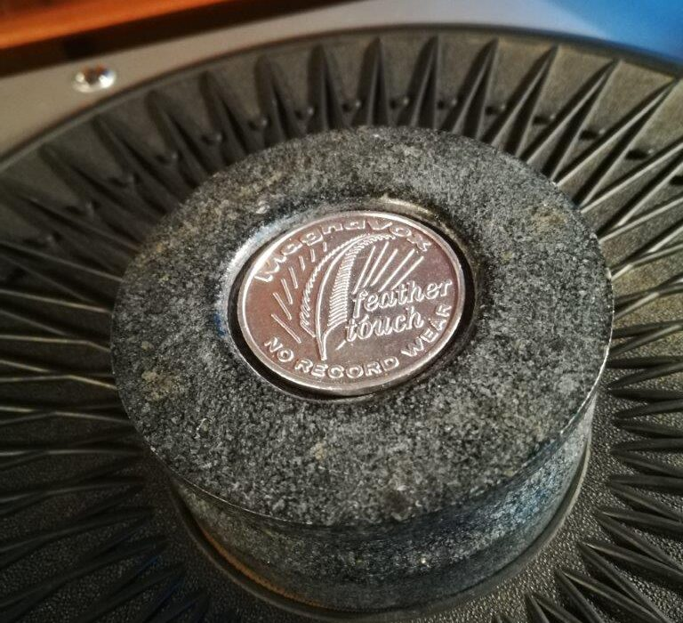
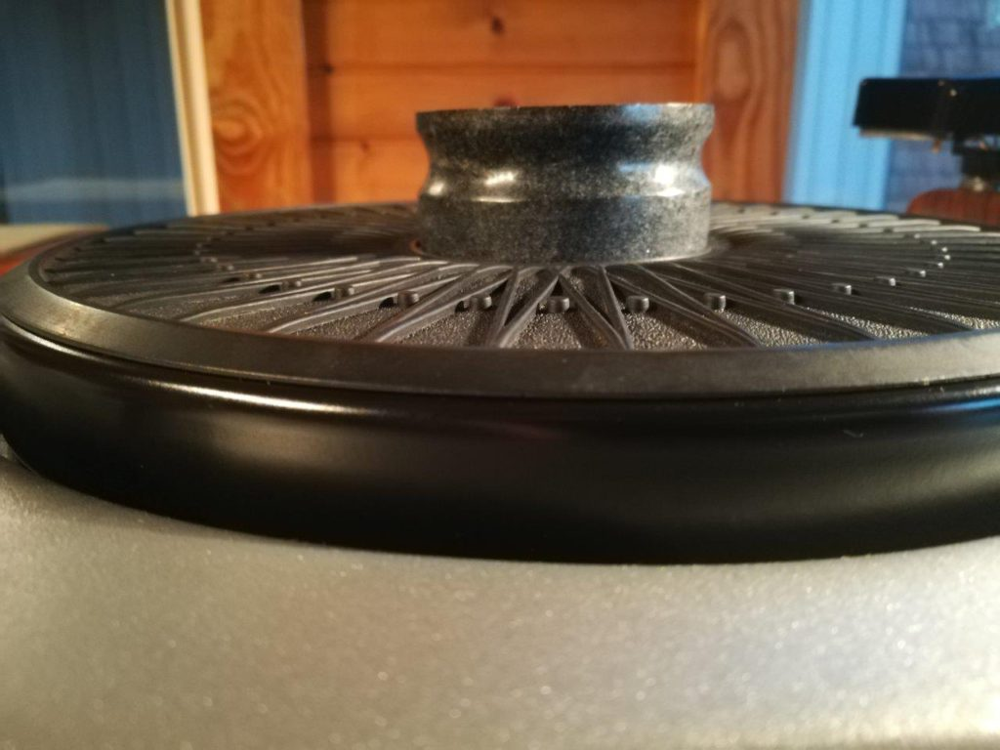

In an effort to reduce rumble on my newly manualized Micromatic, I thought I would try a record weight. Some of them are quite expensive for, truly, nothing but a pound or so of weight to set on top of the record label while spinning. I knew I could make one easily, so I did.
I used a slab of soapstone 1.5″ thick. The density of soapstone is a bit higher than aluminum, so I knew it was around the right weight for a 3″ or so puck to work. It ended up at just under 12 ounces. A bimetal hole saw chucked in the drill press made short work of cutting out the rough shape, after which I used 1/4″ all-thread, washers and nuts to chuck it in the press as a makeshift lathe. I have badly abused the bearing on my drill press this way, but thus far it has held up.

Several grits of sandpaper allowed me to turn the stone down to a smooth shape with a finger groove. I actually used a Dremel 1/2″ sanding drum to shape the finger groove. I keep the shopvac going and close to my face while doing this, to keep the dust down.
I experimented with several materials for the bottom of the soapstone. I was trying to find something to improve grip, while at the same time, providing a soft material for centering on the spindle. The weight, being stone, makes scraping noises if not perfectly centered, so ideally, I would drill the center hole large and use a softer, quiet material to center the weight.
I tried neoprene rubber, which provided amazing grip, of course, but the tendency to grip the spindle was a major detriment. Felt would not, I think, improve grip at all. I settled on no material at all, but I believe the right answer is leather or cork. Perhaps in the future.
I decided to recess the top and glue in a vintage advertising token for the turntable. Back when the Magnavox Micromatic was new, it was a big deal that the tonearm only tracked at 3 grams, or “1/10th ounce” as the reverse of the token touts. The diamond stylus was supposed to have a guaranteed 10-year life due to the low tracking weight. Today, of course, 3 grams is on the high side.
To my ears, there is no noticeable reduction in rumble, wow or flutter, but its not hurting either, which means, I suppose, that it may be improving those things imperceptibly.
Tags: Magnavox, record weight, Turntable